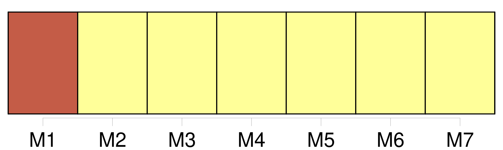

Longueur nb maillons : 8 mentions |
  |
[Sa tête] lui paraissait toute vide, et il ne s'expliquait pas nettement où il se trouvait. [8 phrases] Florent, en tournant [la tête] , aperçut, de l'autre côté de ses choux, un homme qui ronflait, roulé comme un paquet dans une limousine, la tête sur des paniers de prunes. [5 phrases] Il tourna [la tête] , fâché d'ignorer où il était, inquiété par cette vision colossale et fragile ; et, comme il levait les yeux, il aperçut le cadran lumineux de Saint-Eustache, avec la masse grise de l'église. [34 phrases] Jusqu'au soir, il rôda, [la tête perdue] , voyant toujours la jeune femme, en travers sur ses jambes, avec sa face toute pâle, ses grands yeux bleus ouverts, ses lèvres souffrantes, son étonnement d'être morte, là, si vite. [54 phrases] Il avait [la tête] pleine d'histoires de police, d'agents guettant à chaque coin de rue, de femmes vendant les secrets qu'elles arrachaient aux pauvres diables. [13 phrases] Une grosse cloche, au-dessus de [la tête de Florent] , au coin du pavillon des fruits, se mit à sonner. [20 phrases] Une voix douce et lente, qu'il entendait depuis longtemps, lui fit tourner [la tête] [209 phrases] Florent tournait [la tête] , gêné par ces tasses pleines, que les consommateurs vidaient sans mot dire, avec un regard de côté d'animaux méfiants. |

|
La ressource peut être téléchargée sur la page Ortolang
Si vous avez des questions ou vous voyez des erreurs, merci d'envoyer un mail à silvia.federzoni89@gmail.com
Site développé par S. Federzoni (contact)